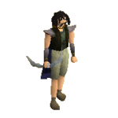

")
Kristall-Gegenstände
Einführung | Lage | Elfenkristall-Gegenstände | Kristall-Bogen | Kristall-Schild | Kristall-Säge | Kristall-Klangstäbe
Einführung

Die Kristall-Samen stammen aus der Heimat von Seren, der elfischen Göttin, die es als einzige gemeistert hat, mit den Kristall-Samen zu kommunizieren. Kristall-Samen sind nämlich zu einem gewissen Grad lebendig. Aus dem Samen wird ein Bogen oder ein Schild hergestellt und sobald er einmal benutzt wurde, bleibt er bei dem Benutzer, bis er sich wieder in einen Samen zurückverwandelt.
Lage

Im Wald müsst ihr Islwyn finden, wenn ihr einen funkelnagelneuen Bogen/Schild kaufen möchtet. Ihr könnt gleichzeitig so viele Bögen/Schilde besitzen, wie ihr möchtet.
Genau wie Eluned und Islwyn, bewegt sich Ilfeen gern frei im Wald herum, also müsst ihr vielleicht den zweiten Ort abklappern, wenn ihr sie am ersten nicht finden könnt. Auch hier solltet ihr unterwegs auf Fallen aufpassen!
Ihr müsst Ilfeen finden, wenn ihr einen Kristall-Samen habt, der in einen Bogen oder Schild verwandelt werden soll.
Elfenkristall-Gegenstände
Momentan lassen die Elfen Menschen nur ein paar Kristall-Gegenstände verwenden: darunter sind der Bogen und der Schild. Ilfeen arbeitet zwar ständig an ihren Fähigkeiten, muss aber erst noch lernen, wie man Samen in Kristall-Hellebarden verwandelt.
Kosten
Islwyn verkauft euch gerne einen neuen Bogen für 900.000 Goldmünzen und einen neuen Schild für 750.000. Ein neuer Bogen oder Schild hat 2.500 Ladungen, was heißt, dass ihr jeweils 2.500 Pfeile von einem Kristall-Bogen abschießen könnt oder der Schild 25.000 Schadenspunkte für euch abwehrt, bevor sich die beiden Gegenstände in einen Samen zurückverwandeln.Wenn er sich in einen Samen zurückverwandelt, solltet ihr Ilfeen einen Besuch abstatten. Statt wieder so viel Geld hinzublättern, um einen neuen Bogen zu kaufen, könnt ihr Ilfeen bezahlen, damit sie mit Gesängen euren Kristall-Samen in einen neuen Bogen/Schild verwandelt. Die Idee, die hinter den Gesängen steckt, ist ganz einfach: verschiedene Tonlagen können die Form und Größe von jedem Aspekt des Samens verändern.
Dies ermöglicht es einer trainierten Stimme, Kristall-Samen in alle möglichen Formen zu verwandeln. Besonders gut ausgebildete Personen können diese Gegenstände mit besonderen Fähigkeiten versehen. Das einzige Problem dabei ist, dass es sich hierbei um einen sehr kostspieligen und zeitaufwändigen Prozess handelt. Allerdings kann der Vorgang etwas billiger gemacht werden: je besser der Sänger die Person kennt, für die die Gegenstände hergestellt werden, desto einfacher ist das Ganze. Je mehr Ilfeen euren Kristall-Samen also besingt, desto billiger wird es für euch. Nach fünf Verwandlungen bleibt der Preis, den ihr bezahlen müsst, allerdings konstant.
| Gegenstand | 1. Aufladen | 2. Aufladen | 3. Aufladen | 4. Aufladen | Ab 5. Aufladen |
![[Bild]](../../img/main/kbase/weapons/ranged/crystal_bow.gif) Kristall-Bogen |
900.000 Goldmünzen |
720.000 Goldmünzen |
540.000 Goldmünzen |
360.000 Goldmünzen |
180.000 Goldmünzen |
![[Bild]](../../img/main/kbase/armour/melee/crystalshield.gif) Kristall-Schild |
750.000 Goldmünzen |
600.000 Goldmünzen |
450.000 Goldmünzen |
300.000 Goldmünzen |
150.000 Goldmünzen |
Kristall-Bogen
Da man für die Handhabung des Kristall-Bogens so gewandt wie ein Elf und so genau wie ein Scharfschütze sein muss, braucht man Fernkampf mindestens auf Stufe 70 und Gewandtheit mindestens auf Stufe 50, um sich seine Kräfte zunutze zu machen. Außerdem ist es erwähnenswert, dass ihr bei der Benutzung des Bogens keine Pfeile in eurem Köcher benötigt, da der Bogen mit der Macht Serens durchwirkt ist. Da der Bogen aus einem Kristall-Samen entstanden ist, werdet ihr bemerken, dass er sich mit der Zeit abnutzt, bis er sich schließlich in einen Samen zurückverwandelt. Der Kristall-Bogen verfügt über 2.500 Schuss, also nutzt er sich nach jeweils 250 Schuss ab (beispielsweise wird er nach den ersten 250 Schuss von einem 'neuen Kristall-Bogen' zu einem 'Kristall-Bogen 9/10').
Durch Abnutzung verliert der Bogen allmählich etwas von seinem Fernkampf-Bonus. Die Genauigkeit des Bogens ist aber immer außergewöhnlich, selbst wenn sie schon etwas nachgelassen hat.

| Macht des Bogens | Fernkampf-Bonus |
| Neu / Voll | +100 |
| 9/10 | +96 |
| 8/10 | +92 |
| 7/10 | +88 |
| 6/10 | +84 |
| 5/10 | +80 |
| 4/10 | +76 |
| 3/10 | +72 |
| 2/10 | +68 |
| 1/10 | +64 |
Kristall-Schild
Da man für die Handhabung des Kristall-Schilds so gewandt wie ein Elf und so bewandert wie ein wahrer Krieger sein muss, braucht man Verteidigung mindestens auf Stufe 70 und Gewandtheit mindestens auf Stufe 50, um sich seine Kräfte zunutze zu machen. Da der Schild aus einem Kristall-Samen entstanden ist, werdet ihr bemerken, dass er sich mit der Zeit abnutzt, bis er sich schließlich in einen Samen zurückverwandelt. Der Kristall-Schild kann 25.000 Schadenspunkte abwehren, also nutzt er sich nach jeweils 2.500 Schadenspunkten, die euch getroffen haben, ab (beispielsweise wird er nach den ersten 2.500 Schadenspunkten von einem 'neuen Kristall-Schild' zu einem 'Kristall-Schild 9/10' - wenn ihr mit 0 getroffen werdet, werden dem Schild auch keine Punkte abgezogen).
Wenn der Schild sich abnutzt, verliert er etwas von seinen Verteidigungsboni. Im neuen Zustand hat der Schild höhere Verteidigungsboni als ein Drachen-Vierecksschild!
Der Kristall-Schild zieht immer 10 Punkte von Magie- und Fernkampf-Angriffsboni ab.
![[Bild]](../../img/main/kbase/guides/crystal/shield.gif)
| Macht des Schilds | Verteidigungsboni | |||||
![[Bild: Stechen]](../../img/main/kbase/table_text/stab1.gif "Stechen") |
![[Bild: Schlitzen]](../../img/main/kbase/table_text/slash1.gif "Schlitzen") |
![[Bild: Zermalmen]](../../img/main/kbase/table_text/crush1.gif "Zermalmen") |
![[Bild: Magie]](../../img/main/kbase/table_text/magic1.gif "Magie") |
![[Bild: Beschwörung]](../../img/main/kbase/table_text/summoning1.gif "Beschwörung") |
||
| Neu / Voll | + 51 | + 54 | + 53 | + 0 | + 80 | + 70 |
| 9/10 | + 49 | + 52 | + 51 | + 0 | + 78 | + 68 |
| 8/10 | + 47 | + 50 | + 49 | + 0 | + 76 | + 66 |
| 7/10 | + 45 | + 48 | + 47 | + 0 | + 74 | + 65 |
| 6/10 | + 43 | + 46 | + 45 | + 0 | + 72 | + 63 |
| 5/10 | + 41 | + 44 | + 43 | + 0 | + 70 | + 61 |
| 4/10 | + 39 | + 42 | + 41 | + 0 | + 68 | + 59 |
| 3/10 | + 37 | + 40 | + 39 | + 0 | + 66 | + 58 |
| 2/10 | + 35 | + 38 | + 37 | + 0 | + 64 | + 56 |
| 1/10 | + 33 | + 36 | + 35 | + 0 | + 62 | + 54 |
Kristall-Säge
![[Bild]](../../img/main/kbase/items/misc/crystal_saw.gif) Dieser wunderliche Ausrüstungsgegenstand ist eine Mischung aus mystischer Elfenkunst und gnomischer Genialität, die nur Abenteurern gegeben wird, die den Gnomen im Abenteuer 'Die Augen von Glouphrie' geholfen haben.
Dieser wunderliche Ausrüstungsgegenstand ist eine Mischung aus mystischer Elfenkunst und gnomischer Genialität, die nur Abenteurern gegeben wird, die den Gnomen im Abenteuer 'Die Augen von Glouphrie' geholfen haben. Mit der Kristall-Säge könnt ihr Möbel in eurem Haus bauen, für die ihr normalerweise bis zu drei Stufen mehr in Baukunst brauchen würdet. Habt ihr etwa Stufe 57, dann könnt ihr mit der Säge Möbel der Stufe 60 bauen, also z. B. ein vergoldetes Himmelbett. Die Materialien, um den betreffenden Gegenstand zu bauen, braucht ihr natürlich trotzdem.
Bitte beachtet, dass die Kristall-Säge sich nur auf Möbel auswirkt, die auch mit einer Säge hergestellt werden müssen. Ihre Wirkung gilt also nicht für das Bauen von Räumen oder das Pflanzen von Blumen/Bäumen/Hecken.
Die Kraft des Kristalls wird dabei etwas abnehmen. Ihr könnt 28 Gegenstände anfertigen, bevor die Säge wieder zu einem ungeladenen Kristall-Samen wird, der erst wieder aufgeladen werden muss.
Um den Samen eurer Kristall-Säge aufzuladen, müsst ihr zu Brimstails Höhle zurückkehren und den Samen mit der Kristall-Schüssel benutzen. Als Alternative könnt ihr auch Ilfeen im Wald von Isafdar aufsuchen und sie bitten, den Samen wieder aufzuladen.
Kristall-Klangstäbe
![[Bild]](../../img/main/kbase/items/quests/crystal_chime.gif) Dieser Geniestreich aus Kristall ist ein unschätzbares Werkzeug, wenn man entstellte Kreaturen von ihren Unreinheiten säubern will. Spieler können sich die Klangstäbe verdienen, indem sie dem 'Weg des Glouphrie' folgen.
Dieser Geniestreich aus Kristall ist ein unschätzbares Werkzeug, wenn man entstellte Kreaturen von ihren Unreinheiten säubern will. Spieler können sich die Klangstäbe verdienen, indem sie dem 'Weg des Glouphrie' folgen. Wenn man die Klangstäbe im Alltag einsetzt, sind sie besonders hilfreich dabei, entstellte Terrorvögel und Schildkröten zu schwächen, die sonst allen Angriffsarten gegenüber immun sind. Indem man die Kristall-Klangstäbe mit diesen mutierten Bestien benutzt, werden die Verunreinigungen in ihren Körpern temporär aus ihren Körpern entfernt, sodass sie angegriffen werden können. Bitte denkt aber daran, dass diese Wirkung nur vorübergehend ist, also richtet so viel Schaden wie möglich an, in der Zeit, die euch bleibt!

Weitere Artikel in Diverse Anleitungen
|
|
|
Weiterführende Informationen Wenn euch dieser Artikel nicht weitergeholfen hat, könnt ihr in den folgenden Kapiteln der RuneScape-Webseite mehr Informationen finden:
|
|